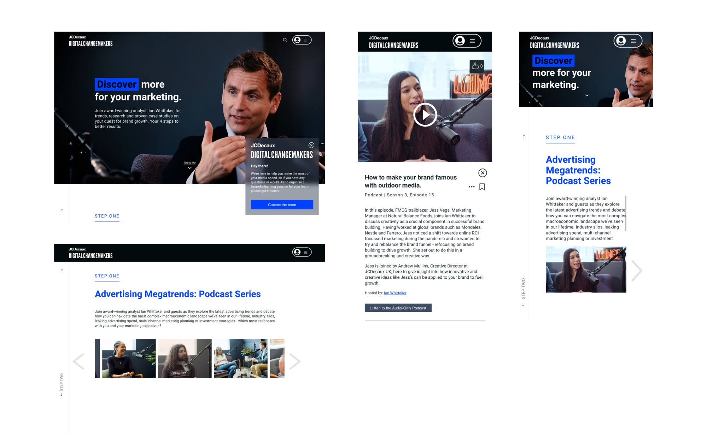
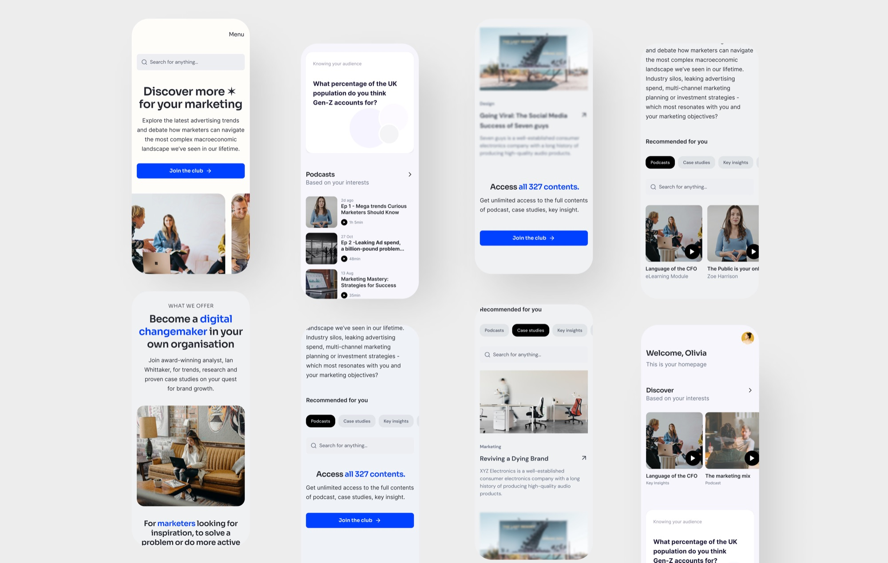
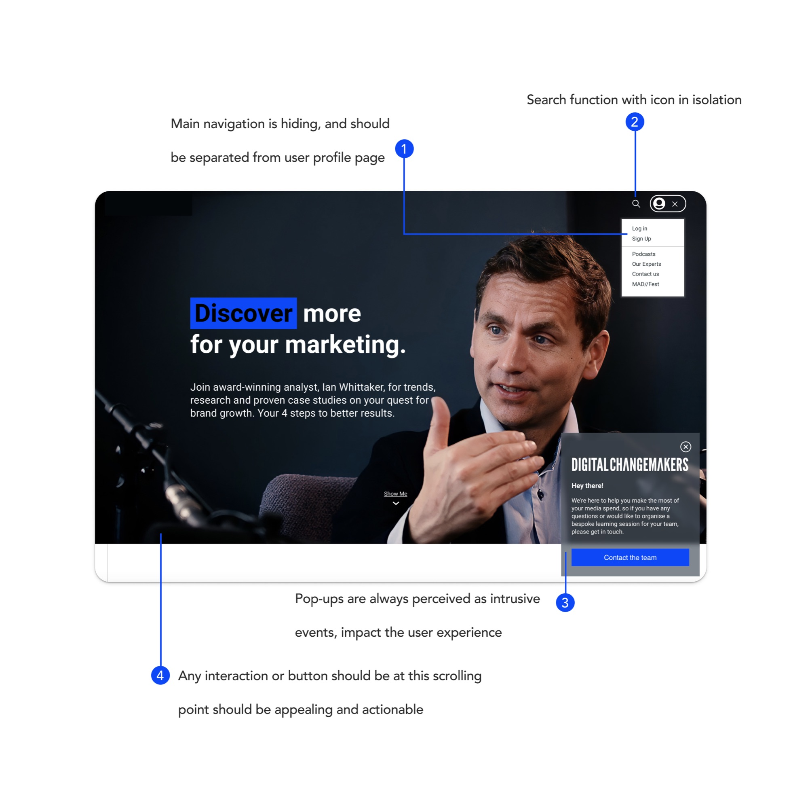
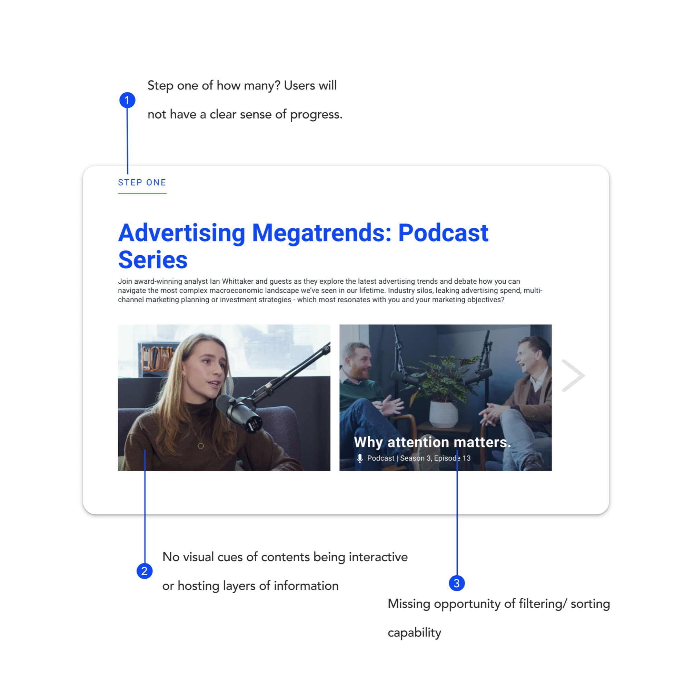
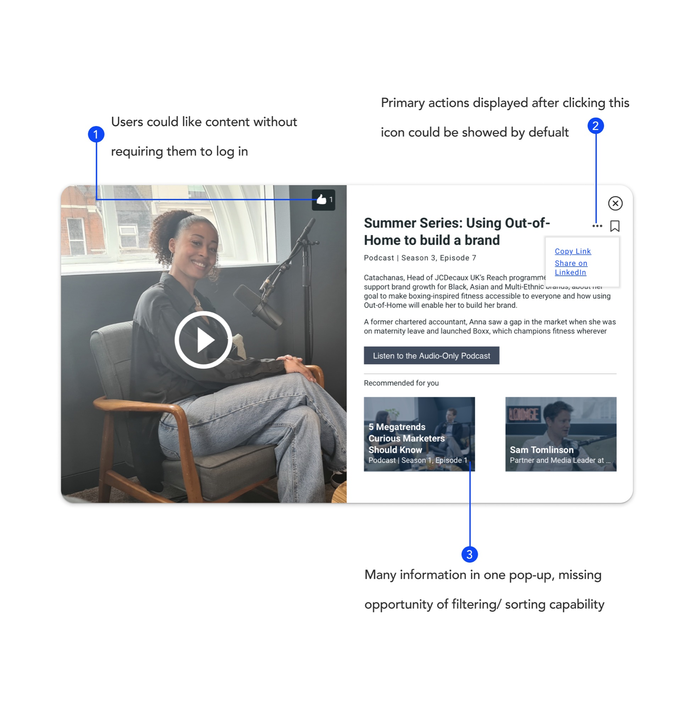
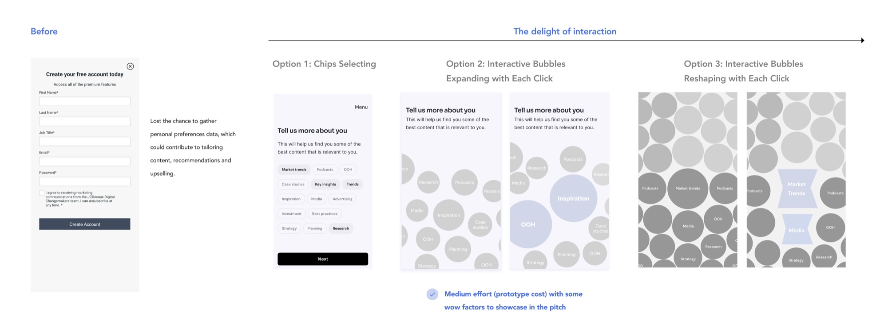
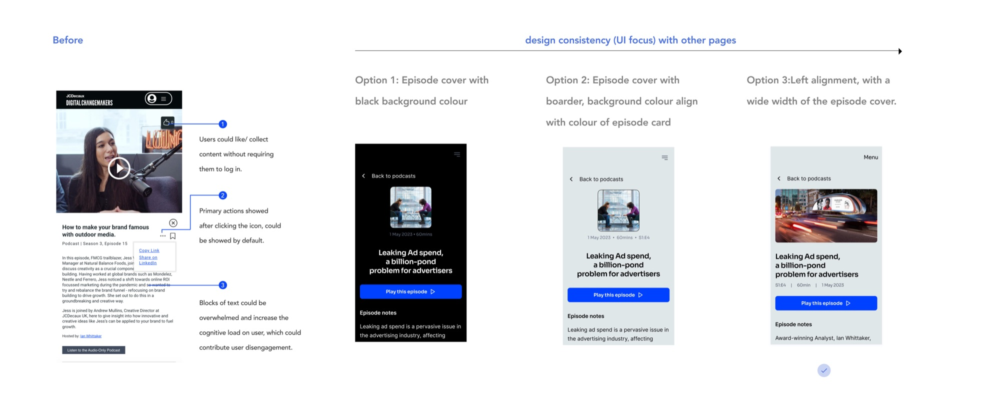
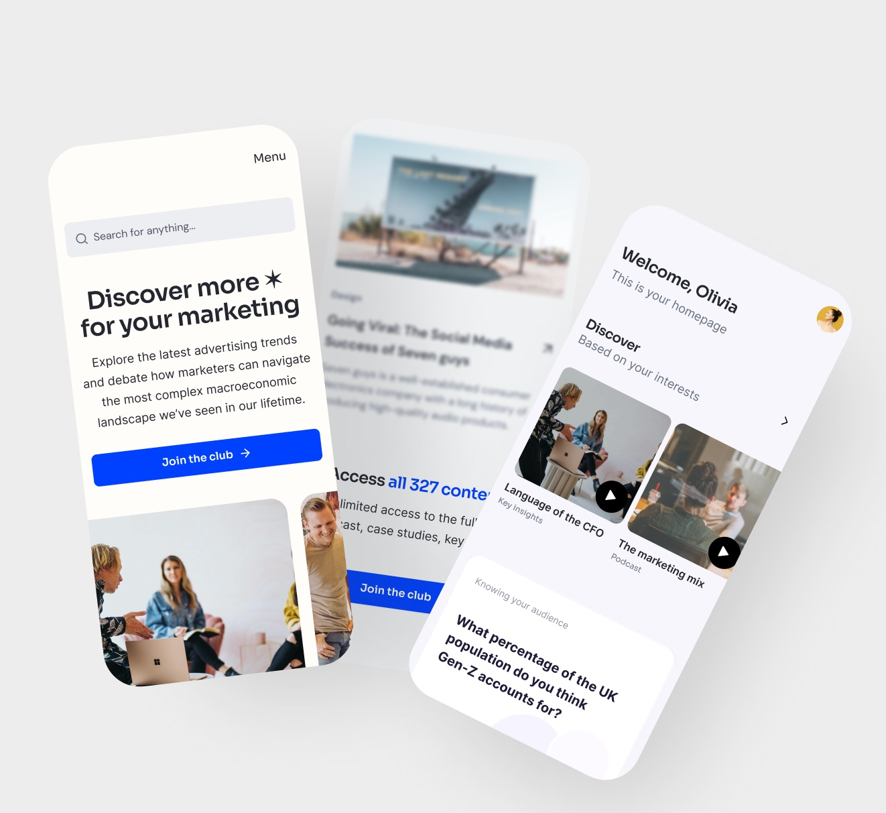

Content Hub Redesign for a Global Outdoor Advertising Company
Empowering diverse customer groups through a revolutionary content hub, tailored to deliver resources every day and inspire the creation of deals with our clients.
Dec 2023 · 2 weeks

The team
- Senior designer
- Junior designer (me)
- Product manager
What I did
- UX audit
- Competitive analysis
- Prototyping
Limitations
- Direct access to end users was unavailable
- No brand guidelines
Timeline & tools
2 weeks
Figma, Miro, hybrid workshops
The client
A global outdoor advertising company that wants to leverage a digital hub to attract and inspire experts to build their marketing cases.
Category: marketing, self-contained platform · Service: app design
The Challenge
Help the client redesign their content hub to attract more visitors, inspiring them to explore our client's services and build cases based on the content.
To assist our clients in securing more deals, we were assigned the task of crafting an inclusive and intuitive user experience to elevate overall user engagement.
How their product looked before
While our client has great and insightful content, accessibility issues such as a lack of visual cues — and other UX concerns, like an unclear value proposition in the hero section — may lead users to feel confused during interactions with the product. It also isn't easy for them to stay engaged.


UX Audit
We conducted a UX audit to address usability issues, heuristic problems, and pain points. Given the deadline and limited resources for additional user research, the audit gave us the fastest route to defensible problems.



Problem identification
After synthesising our research findings, we identified three major UX problems on the previous content hub.
- Unclear value proposition in the hero section. Users lack a clear understanding of what the content hub offers and how it meets their needs, leading to a potentially high bounce rate.
- Poor usability with unattractive content. The absence of filtering and sorting features hinders users from locating their desired content. The product also lacks personalised content, further limiting the experience.
- Lacking visual cues. The client has genuinely desirable content, but without visual cues for interactive content — and for content hosting layers of information — users cannot tell what is explorable.
Design explorations
Interactive interests selection
To address reduced satisfaction when users select diverse content types during onboarding, we explored creating a simple and interactive onboarding process.

Podcast episode page
We held varying opinions on the podcast episode page UI. To decide, we ran a brief dot-voting process and chose the design that prioritised consistency.

Design solutions
A dynamic and engaging user experience
- Designed with mobile optimisation in mind
- Clear and compelling CTAs
- Personalised dashboard with interactive widgets

A captivating swipe-down animation
By transforming the podcasts page into an interactive and visually appealing hub, we anticipate an increase in user engagement, longer session durations, and higher retention.
The result
After completing Immersion, we were re-engaged by the client to build the MVP.